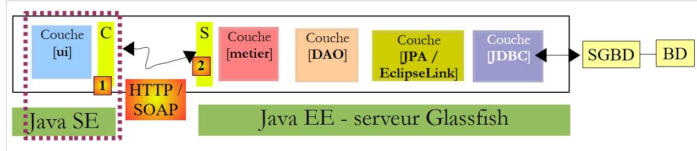
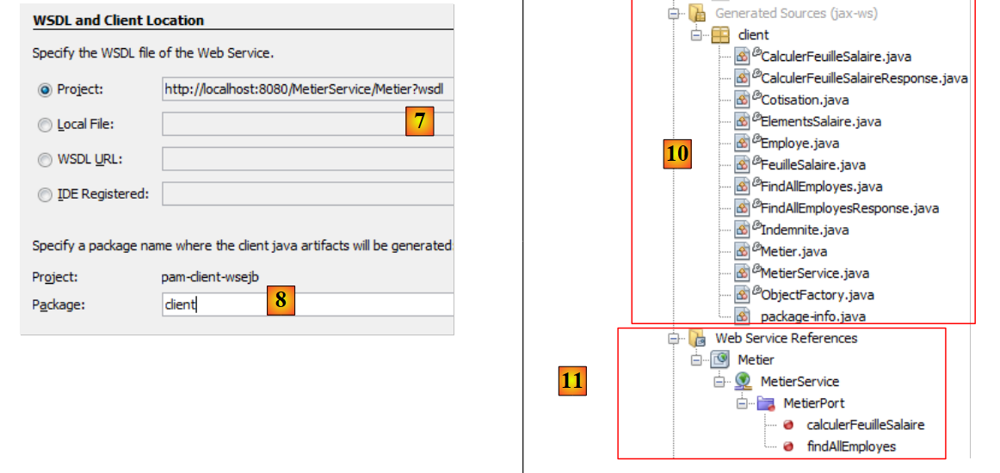
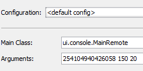
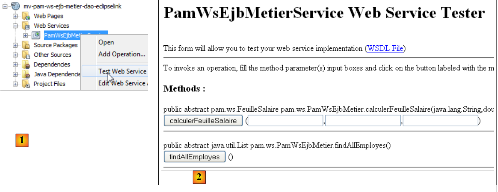
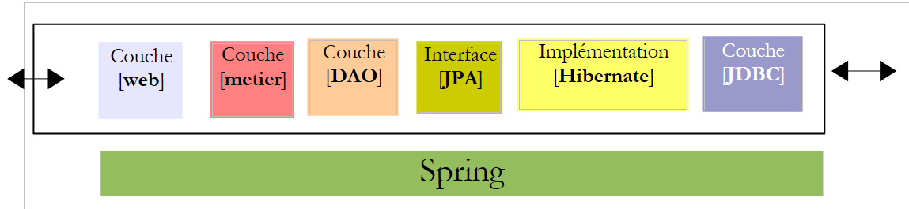

8. الإصدار 4 – عميل/خادم في بنية خدمة ويب
في هذا الإصدار الجديد، سيتم تشغيل التطبيق [Pam] في وضع العميل/الخادم في بنية خدمة الويب. لنعد إلى بنية التطبيق السابق:
 |
فيما سبق، كانت طبقة الاتصال [C, RMI, S] تسمح بالاتصال الشفاف بين العميل [ui] والطبقة البعيدة [metier]. سنستخدم بنية مماثلة، حيث سيتم استبدال طبقة الاتصال [C, RMI, S] بطبقة [C, HTTP / SOAP, S]:
 |
يتميز بروتوكول HTTP / SOAP عن البروتوكول السابق RMI / EJB بكونه متعدد المنصات. وبالتالي، يمكن كتابة خدمة الويب بلغة Java ونشرها على خادم Glassfish، في حين يمكن أن يكون العميل عميلاً .NET أو PHP.
سنقوم بتطوير هذه البنية وفقًا لثلاثة أوضاع مختلفة:
- سيتم توفير خدمة الويب بواسطة EJB [Metier]
- سيتم توفير خدمة الويب بواسطة تطبيق ويب يستخدم EJB [Metier]
- سيتم توفير خدمة الويب بواسطة تطبيق ويب يستخدم Spring
يمكن تنفيذ خدمة ويب بعدة طرق داخل خادم Java EE:
- من خلال فئة مزودة بعلامة @WebService يتم تنفيذها في حاوية ويب
 |
- عن طريق EJB المُعلَّم بـ @WebService والذي يتم تنفيذه في حاوية EJB
 |
نبدأ بهذه البنية الأخيرة.
8.1. خدمة ويب تم تنفيذها بواسطة EJB
8.1.1. جزء الخادم
8.1.1.1. مشروع Netbeans
لنبدأ بإنشاء مشروع مافن جديد نسخة من مشروع EJB [mv-pam-ejb-metier-dao-jpa-eclipselink]:
 |
في البنية التالية:
 |
ستكون الطبقة [metier] هي خدمة الويب التي تتصل بها الطبقة [ui]. لا تحتاج هذه الفئة إلى تنفيذ واجهة. فهذه هي التعليقات التوضيحية التي تحول POJO (كائن جافا عادي) إلى خدمة ويب. يتم تحويل الفئة [Metier] التي تنفذ الطبقة [metier] أعلاه، على النحو التالي:
package metier;
...
@WebService
@Stateless()
@TransactionAttribute(TransactionAttributeType.REQUIRED)
public class Metier implements IMetierLocal,IMetierRemote {
// références sur les couches [DAO]
@EJB
private ICotisationDaoLocal cotisationDao = null;
@EJB
private IEmployeDaoLocal employeDao=null;
@EJB
private IIndemniteDaoLocal indemniteDao=null;
// obtenir la feuille de salaire
@WebMethod
public FeuilleSalaire calculerFeuilleSalaire(String SS,
...
}
// liste des employés
@WebMethod
public List<Employe> findAllEmployes() {
...
}
// important - pas de getters et setters pour les EJB
}
- السطر 4، تعمل التعليقة التوضيحية @WebService على تحويل الفئة [Metier] إلى خدمة ويب. تعرض خدمة الويب طرقًا لعملائها. يجب أن تكون هذه الطرق مزودة بالتعليقة التوضيحية @WebMethod.
- السطران 19 و25: تصبح الطريقتان في الفئة [Metier] طرقًا لخدمة الويب.
- السطر 29: من المهم حذف طرق الحصول (getters) والتعيين (setters) وإلا فسيتم عرضها في خدمة الويب مما يتسبب في أخطاء أمنية.
يكتشف Netbeans إضافة هذه التعليقات التوضيحية، مما يؤدي إلى تغيير طبيعة المشروع:
 |
في [1]، ظهرت شجرة [Web Services] في المشروع. نجد فيها خدمة الويب Metier وطريقتيها. يمكن نشر تطبيق الخادم [2]. يجب تشغيل الخادم MySQL ويجب أن تكون قاعدة البيانات [dbpam_eclipselink] موجودة ومملوءة. قد يكون من الضروري قبل ذلك حذف [3] و EJB من مشروع العميل/الخادم EJB الذي تمت دراسته سابقًا لتجنب تعارض الأسماء. في الواقع، يجلب مشروعنا الجديد معه نفس EJB الموجودة في المشروع السابق.
 |
في [1]، نرى تطبيقنا serveur منشورًا على خادم Glassfish. بمجرد نشر خدمة الويب، يمكن اختبارها:
 |
- في [1]، في المشروع الحالي، نختبر خدمة الويب [Metier]
- يمكن الوصول إلى خدمة الويب عبر مختلف URL. يتيح URL [2] اختبار خدمة الويب
- في [3]، وهو رابط إلى الملف XML الذي يحدد خدمة الويب. يحتاج عملاء خدمة الويب إلى معرفة عنوان هذا الملف. يتم إنشاء طبقة العميل (stubs) لخدمة الويب بناءً عليه.
- في [4,5]، نموذج يسمح باختبار الطرق التي تعرضها خدمة الويب. يتم عرض هذه الطرق مع معلماتها التي يمكن للمستخدم تعريفها.
على سبيل المثال، لنختبر الطريقة [findAllEmployes] التي لا تحتاج إلى أي معلمات:
 |
فيما سبق، قمنا باختبار الطريقة. ثم تلقينا الرد أدناه (عرض جزئي). نجد فيه بالفعل الموظفين الاثنين مع تعويضاتهما. ندعو القارئ إلى اختبار الطريقة [4] بنفس الطريقة من خلال تزويدها بالمعلمات الثلاثة التي تتوقعها.

8.1.2. الجزء الخاص بالعميل
 |
8.1.2.1. مشروع Netbeans الخاص بالعميل console
نقوم الآن بإنشاء مشروع Java من النوع [Java Application] لجزء client من التطبيق. لم يكن من الممكن (يونيو 2012) إنشاء مشروع Maven لهذا العميل. تظهر خطأ، يبدو أنه معروف على الإنترنت ولكنه لا يزال دون حل.
 |  |
بمجرد إنشاء المشروع، نشير إلى أنه سيكون عميلاً لخدمة الويب التي قمنا بنشرها للتو على خادم Glassfish:
 |
- في [2]، نختار المشروع الجديد ونضغط على الزر [New File]
- في [3]، نحدد أننا نريد إنشاء عميل لخدمة الويب
 |
- باستخدام [4]، سنحدد مشروع Netbeans لخدمة الويب
- في النافذة [5]، يتم سرد جميع المشاريع التي تحتوي على فرع [Web Services]، وهنا فقط مشروع [mv-pam-ws-metier-dao-eclipselink].
- يمكن لمشروع واحد نشر عدة خدمات ويب. في [6]، نحدد خدمة الويب التي نريد الاتصال بها.
 |
- في [7]، يتم عرض URL لتعريف الخدمة الويب. يتم استخدام URL بواسطة أدوات البرامج التي تولد طبقة العميل التي ستتفاعل مع الخدمة الويب.
 |
- تتكون طبقة العميل [C] [1] التي سيتم إنشاؤها من مجموعة من فئات Java التي سيتم وضعها في حزمة واحدة. يتم تحديد اسم هذه الحزمة في [8].
- بمجرد انتهاء مساعد إنشاء عميل خدمة الويب بالضغط على الزر [Finish]، يتم إنشاء الطبقة [C] المذكورة أعلاه.
وينعكس ذلك في عدد من التغييرات في المشروع:
- في [10] أعلاه، تظهر شجرة [Generated Sources] التي تحتوي على فئات الطبقة [C] التي تسمح للعميل [3] بالتواصل مع خدمة الويب. تسمح هذه الطبقة للعميل [3] بالتواصل مع الطبقة [metier] [4] كما لو كانت محلية وليست بعيدة.
- في [11]، تظهر شجرة [Web Service References] تسرد خدمات الويب التي تم إنشاء طبقة عميل لها.
تجدر الإشارة إلى أنه في الطبقة [C] [10] التي تم إنشاؤها، نجد فئات تم نشرها على جانب الخادم: Indemnite، Cotisation، Employe، FeuilleSalaire، ElementsSalaire، Metier. Metier هي خدمة الويب، أما الفئات الأخرى فهي فئات ضرورية لهذه الخدمة. قد نشعر بالفضول للاطلاع على كودها. سنرى أن تعريف الفئات التي، عند إنشائها، تمثل كائنات يتم التعامل معها بواسطة الخدمة، يتكون من تعريف حقول الفئة ووحدات الوصول الخاصة بها، بالإضافة إلى إضافة تعليقات تسمح بتسلسل الفئة في تدفق XML. أصبحت فئة Metier واجهة تحتوي على الطريقتين اللتين تمت تعليقهما بـ @WebMethod. تنشأ عن كل منهما فئتان، على سبيل المثال [CalculerFeuilleSalaire.java] و [CalculerFeuilleSalaireResponse.java]، حيث تغلف إحداهما استدعاء الطريقة والأخرى نتيجتها. وأخيرًا، فإن الفئة MetierService هي الفئة التي تتيح للعميل الحصول على مرجع لخدمة الويب المتخصصة البعيدة:
تسمح الطريقة getMetierPort في السطر 2 بالحصول على مرجع لخدمة الويب المتخصصة البعيدة.
8.1.2.2. عميل وحدة التحكم لخدمة الويب Metier
لم يتبق لنا سوى كتابة عميل خدمة الويب Metier. ننسخ الفئة [MainRemote] من المشروع [mv-pam-client-metier-dao-jpa-eclipselink] الذي كان عميلاً لخادم EJB، إلى المشروع الجديد.
 |
- إلى [1]، وهي فئة عميل خدمة الويب. تحتوي الفئة [MainRemote] على أخطاء. لتصحيحها، سنبدأ بحذف جميع التعليمات [import] الموجودة في الفئة وسنعيد إنشاؤها باستخدام الخيار [Fix Imports]. في الواقع، أصبحت بعض الفئات المستخدمة من قبل الفئة [MainRemote] جزءًا من الحزمة [client] التي تم إنشاؤها.
- في [3]، جزء الكود الذي يتم فيه إنشاء مثيل الطبقة [metier] هو [3]. ويتم ذلك باستخدام كود JNDI للحصول على مرجع إلى EJB بعيد.
نقوم بتطوير الكود بالطريقة التالية:
- يتم حذف الكود JNDI
- نظرًا لعدم وجود الفئة [PamException] على جانب العميل، نقوم بحذف catch المرتبط بها للاحتفاظ فقط بـ catch في الفئة الأم [Exception].
 |
- في [4]، يتبقى لنا الحصول على مرجع لخدمة الويب البعيدة [Metier] حتى نتمكن من استدعاء طريقتها [calculerFeuilleSalaire].
- في [5]، نستخدم الماوس لسحب (drag) الطريقة [calculerFeuilleSalaire] من خدمة الويب [Metier] لإفلاتها (drop) في [4]. يتم إنشاء كود [6]. يمكن للمطور بعد ذلك تكييف هذا الكود العام.
 |
- السطر 112، نرى أن [calculerFeuilleSalaire] هي طريقة من فئة [client.Metier] (السطر 111). الآن بعد أن عرفنا كيفية الحصول على الطبقة [metier]، يمكن إعادة كتابة الكود السابق على النحو التالي:
يسترد السطر 7 مرجعًا إلى خدمة الويب Metier. بعد ذلك، لا يتغير كود الفئة، باستثناء أنه في السطر 10، لا تتم معالجة الاستثناء من النوع [Exception] بل النوع الأعم Throwable، الفئة الأم للفئة Exception. في حالة وجود استثناء، نعرض جميع الأسباب المتداخلة له حتى السبب الأصلي.
نحن جاهزون للاختبارات:
- التأكد من تشغيل SGBD MySQL5، وإنشاء قاعدة البيانات dbpam_eclipselink وتهيئتها
- التأكد من نشر خدمة الويب على خادم Glassfish
- بناء العميل (Clean and Build)
- تكوين تشغيل العميل
 |
- تشغيل العميل
النتائج في وحدة التحكم هي كما يلي:
مع التكوين التالي:

نحصل على النتائج التالية:
تجدر الإشارة إلى أنه في حين أن خدمة الويب [Metier] ترسل استثناءً من النوع [PamException]، فإن الاستثناء الذي يتلقاه العميل هو من النوع [SOAPFaultException]. وحتى في سلسلة الاستثناءات، لا يظهر النوع [PamException].
8.1.3. عميل Swing لخدمة الويب Metier
المهمة المطلوبة: نقل عميل Swing الخاص بالمشروع [mv-pam-client-ejb-metier-dao-jpa-eclipselink] إلى المشروع الجديد بحيث يصبح هو أيضًا عميلًا لخدمة الويب المنشورة على خادم Glassfish.
8.2. خدمة الويب التي تم تنفيذها بواسطة تطبيق ويب
نحن الآن في إطار البنية التالية:
 |
يتم توفير خدمة الويب بواسطة تطبيق ويب يتم تنفيذه داخل حاوية الويب الخاصة بخادم Glassfish. ستعتمد خدمة الويب هذه على EJB [Metier] الذي تم نشره بدوره في الحاوية EJB3.
8.2.1. جزء الخادم
نقوم بإنشاء تطبيق ويب:
 |
- في [1]، وننشئ مشروعًا جديدًا
- في [2]، هذا المشروع من النوع [Web Application]
- في [3]، نسميه [mv-pam-ws-ejb-metier-dao-eclipselink]
 |
- في [4]، نختار إصدار Java EE 6
- في [6]، المشروع الذي تم إنشاؤه
في المخطط أدناه، سيتم تشغيل تطبيق الويب الذي تم إنشاؤه في حاوية الويب. سيستخدم EJB [Metier] الذي سيتم نشره بدوره في حاوية EJB الخاصة بالخادم.
 |
لكي تتمكن تطبيق الويب الذي تم إنشاؤه من الوصول إلى الفئات المرتبطة بـ EJB [Metier]، نضيف إلى مكتبات تطبيق الويب [mv-pam-ws-ejb-metier-dao-eclipselink]، الاعتماد على الخادم EJB [mv-pam-ejb-metier-dao-eclipselink] الذي تمت دراسته سابقًا.
 |
- في [1]، نضيف مشروعًا إلى تبعيات مشروع الويب،
- في [2]، يتم تحديد المشروع [mv-pam-ejb-metier-dao-eclipselink]،
- في [3]، نوع التبعية هو ejb،
- في [4]، نطاق التبعية هو provided، أي أنها ستُوفَّر بواسطة بيئة التشغيل،
- في [5]، تمت إضافة التبعية.
لإنشاء نفس خدمة الويب السابقة، نحتاج إلى:
- إنشاء فئة تحمل العلامة @Webservice
- مع طريقتين calculerFeuilleSalaire و findAllEmployes الموسومتين بـ @WebMethod
نقوم بإنشاء فئة [PamWsEjbMetier] في حزمة [pam.ws]:
 |
 |
الفئة [PamWsEjbMetier] هي كما يلي:
- الأسطر 7-10: تستورد الفئة فئات من الوحدة النمطية EJB [pam-serveurws-metier-dao-jpa-eclipselink] التي تمت إضافة مشروع Maven الخاص بها إلى تبعيات المشروع.
- السطر 12: الفئة هي خدمة ويب
- السطر 13: تنفذ واجهة IMetier المحددة في الوحدة النمطية EJB
- السطران 18-19: يتم عرض الطريقة calculerFeuilleSalaire كطريقة لخدمة الويب
- السطران 23-24: يتم عرض الطريقة findAllEmployes كطريقة لخدمة الويب
- السطران 15-16: يتم إدراج الواجهة المحلية لـ EJB [Metier] في حقل السطر 16. نستخدم الواجهة المحلية لأن تطبيق الويب والوحدة النمطية EJB يتم تشغيلهما في نفس JVM.
- السطران 20 و25: تقوم الطريقتان calculerFeuilleSalaire وfindAllEmployes بتفويض معالجتهما إلى الطرق التي تحمل نفس الاسم في EJB [Metier]. وبالتالي، فإن الفئة لا تخدم سوى عرض طرق EJB و [Metier] للعملاء البعيدين كطرق لخدمة ويب.
في Netbeans، يتم التعرف على تطبيق الويب على أنه يعرض خدمة ويب:
 |
لنشر خدمة الويب على خادم Glassfish، يتعين علينا نشر كل من:
- الوحدة النمطية للويب في حاوية الويب الخاصة بالخادم
- وحدة EJB في حاوية EJB الخاصة بالخادم
للقيام بذلك، نحتاج إلى إنشاء تطبيق من النوع [Enterprise Application] الذي سيقوم بنشر الوحدتين في نفس الوقت. وللقيام بذلك، يجب تحميل المشروعين في Netbeans [2].
وبعد ذلك، نقوم بإنشاء مشروع جديد [3].
 |
- في [4]، نختار مشروعًا من النوع [Enterprise Application].
- في [5]، نسمي المشروع
 |
- في [6]، نقوم بتكوين المشروع. ستكون إصدارة Java EE هي Java EE 6. يمكن إنشاء مشروع مؤسسي باستخدام وحدتين: وحدة EJB ووحدة ويب. هنا، سيقوم مشروع المؤسسة بتغليف الوحدة النمطية للويب والوحدة النمطية EJB التي تم إنشاؤها وتحميلها بالفعل في Netbeans. لذلك لا نطلب إنشاء وحدات نمطية جديدة.
- في [7]، تم إنشاء مشروع المؤسسة [mv-pam-webapp-ear] بهذه الطريقة. تم إنشاء مشروع Maven آخر في نفس الوقت [mv-pam-webapp]. لن نتطرق إليه.
- في [8]، نضيف تبعيات إلى مشروع المؤسسة
 |
- في [9]، نضيف مشروع الويب من نوع war،
- في [10]، نضيف المشروع EJB من نوع ejb،
 |
- في [11]، مشروع المؤسسة مع تبعياته.
نقوم بإنشاء مشروع المؤسسة من خلال عملية "Clean and Build". نحن على وشك الانتهاء من نشره على خادم Glassfish. قبل ذلك، قد يكون من الضروري إزالة التطبيقات التي تم تحميلها بالفعل على الخادم لتجنب أي تعارض محتمل في أسماء EJB [11]:
 |
يجب تشغيل الخادم MySQL وتكون قاعدة البيانات [dbpam_eclipselink] متاحة ومملوءة. بعد ذلك، يمكن نشر تطبيق المؤسسة [12]. في [13]، يمكننا أن نرى أنه تم نشرها بالفعل على خادم Glassfish.
يمكننا اختبار خدمة الويب التي تم نشرها للتو:
 |
- في [1]، نطلب اختبار خدمة الويب [PamWsEjbMetier]
- في [2]، صفحة الاختبار. نترك للقارئ مهمة إجراء الاختبارات.
8.2.2. الجزء الخاص بالعميل
المهمة المطلوبة: باتباع الخطوات الموضحة في الفقرة 8.1.2.1، قم بإنشاء عميل وحدة تحكم لخدمة الويب السابقة.
8.3. خدمة الويب المنفذة باستخدام Spring و Tomcat
نضع أنفسنا الآن في إطار البنية التالية:
 |
يتم توفير الخدمة الويب بواسطة تطبيق ويب يتم تنفيذه داخل حاوية الويب لخادم Tomcat. ستكون بنية التطبيق كما يلي:
 |
سنعتمد على المشروع [mv-pam-spring-hibernate] الذي تم إنشاؤه في الفقرة 5.11:
 |
8.3.1. جزء الخادم
نقوم بإنشاء تطبيق Maven من نوع الويب باسم [mv-pam-ws-spring-tomcat] [1]:
 |
نقوم بتعديل الملف [pom.xml] لتضمين التبعيات التالية [2]:
<dependencies>
<dependency>
<groupId>${project.groupId}</groupId>
<artifactId>mv-pam-spring-hibernate</artifactId>
<version>${project.version}</version>
</dependency>
<!-- Apache CXF dependencies -->
<dependency>
<groupId>org.apache.cxf</groupId>
<artifactId>cxf-rt-frontend-jaxws</artifactId>
<version>2.2.12</version>
</dependency>
<dependency>
<groupId>org.apache.cxf</groupId>
<artifactId>cxf-rt-transports-http</artifactId>
<version>2.2.12</version>
</dependency>
</dependencies>
- الأسطر 3-7: التبعية لمشروع [spring-pam-jpa-hibernate]،
- الأسطر 8-17: التبعيات على إطار عمل Apache CXF [http://cxf.apache.org/]. يسهل هذا الإطار إنشاء خدمات الويب.
يحتوي ملف [pom.xml] هذا على العديد من التبعيات [2].
لنعد إلى بنية التطبيق:
 |
يتم إدارة استدعاءات خدمة الويب التي سنقوم بإنشائها بواسطة سيرفلت من إطار العمل CXF. وينعكس ذلك في الملف [WEB-INF / web.xml] على النحو التالي:
<?xml version="1.0" encoding="UTF-8"?>
<web-app version="2.5" xmlns="http://java.sun.com/xml/ns/javaee" xmlns:xsi="http://www.w3.org/2001/XMLSchema-instance" xsi:schemaLocation="http://java.sun.com/xml/ns/javaee http://java.sun.com/xml/ns/javaee/web-app_2_5.xsd">
<display-name>mv-pam-ws-spring-tomcat</display-name>
<listener>
<listener-class>org.springframework.web.context.ContextLoaderListener</listener-class>
</listener>
<!-- Configuration de CXF -->
<servlet>
<servlet-name>CXFServlet</servlet-name>
<servlet-class>org.apache.cxf.transport.servlet.CXFServlet</servlet-class>
<load-on-startup>1</load-on-startup>
</servlet>
<servlet-mapping>
<servlet-name>CXFServlet</servlet-name>
<url-pattern>/ws/*</url-pattern>
</servlet-mapping>
<session-config>
<session-timeout>
30
</session-timeout>
</session-config>
<welcome-file-list>
<welcome-file>index.jsp</welcome-file>
</welcome-file-list>
</web-app>
- يعتمد إطار العمل CXF على Spring. الأسطر 4-6: يتم إعلان مستمع. سيتم تحميل الفئة المقابلة في نفس الوقت الذي يتم فيه تحميل تطبيق الويب. وستستخدم ملف تكوين Spring [WEB-INF / applicationContext.xml]:
 |
- الأسطر 8-12: السيرفلت CXF الذي سيدير المكالمات إلى خدمة الويب التي سنقوم بإنشائها،
- الأسطر 13-16: ستكون URL التي تعالجها الخدمة الصغيرة CXF من النوع /ws/*. لن تعالج CXF الباقي.
لتعريف خدمة الويب، نقوم بتعريف واجهة وتطبيقها:
 |
ستكون واجهة [IWsMetier] كما يلي:
package pam.ws;
import javax.jws.WebService;
import metier.IMetier;
@WebService
public interface IWsMetier extends IMetier{
}
- السطر 7: واجهة [IWsMetier] مشتقة من واجهة [IMetier] من الطبقة [métier] للمشروع [mv-pam-spring-hibernate]،
- السطر 6: واجهة [IWsMetier] هي واجهة خدمة ويب.
فئة تنفيذ هذه الواجهة هي التالية:
package pam.ws;
import java.util.List;
import javax.jws.WebMethod;
import javax.jws.WebService;
import jpa.Employe;
import metier.FeuilleSalaire;
import metier.IMetier;
@WebService
public class PamWsMetier implements IWsMetier {
// couche métier
private IMetier metier;
// constructeur
public PamWsMetier(){
}
@WebMethod
public FeuilleSalaire calculerFeuilleSalaire(String SS, double nbHeuresTravaillees, int nbJoursTravailles) {
return metier.calculerFeuilleSalaire(SS, nbHeuresTravaillees, nbJoursTravailles);
}
@WebMethod
public List<Employe> findAllEmployes() {
return metier.findAllEmployes();
}
// getters et setters
public void setMetier(IMetier metier) {
this.metier = metier;
}
}
- السطر 11: فئة [PamWsMetier] تنفذ الواجهة المحددة سابقًا،
- السطر 10: يُعرّف الفئة كخدمة ويب،
- السطر 14: سيتم حقن الطبقة [métier] بواسطة Spring،
- السطران 21 و26: التعليق التوضيحي @WebMethod يجعل من الأسلوب أسلوبًا معروضًا بواسطة خدمة الويب،
- السطران 23 و28: يتم تنفيذ الطرق باستخدام الطبقة [métier].
يبقى لنا تحديد محتوى ملف تكوين Spring [applicationContext.xml]:
 |
محتواه هو التالي:
<?xml version="1.0" encoding="UTF-8"?>
<beans xmlns="http://www.springframework.org/schema/beans" xmlns:xsi="http://www.w3.org/2001/XMLSchema-instance"
xmlns:tx="http://www.springframework.org/schema/tx"
xmlns:jaxws="http://cxf.apache.org/jaxws"
xsi:schemaLocation="http://www.springframework.org/schema/beans
http://www.springframework.org/schema/beans/spring-beans-2.0.xsd
http://www.springframework.org/schema/tx
http://www.springframework.org/schema/tx/spring-tx-2.0.xsd
http://cxf.apache.org/jaxws
http://cxf.apache.org/schemas/jaxws.xsd">
<!-- Apache CXF -->
<import resource="classpath:META-INF/cxf/cxf.xml" />
<import resource="classpath:META-INF/cxf/cxf-extension-soap.xml" />
<import resource="classpath:META-INF/cxf/cxf-servlet.xml" />
<!-- couches basses -->
<import resource="classpath:spring-config-metier-dao.xml" />
<!-- service web -->
<bean id="wsMetier" class="pam.ws.PamWsMetier">
<property name="metier" ref="metier"/>
</bean>
<jaxws:endpoint id="wsmetier"
implementor="#wsMetier"
address="/metier">
</jaxws:endpoint>
</beans>
- الأسطر 13-15: يتم استيراد ملفات تكوين Apache CXF. يتم البحث عن هذه الملفات في Classpath الخاص بالمشروع (السمة classpath:)،
- الأسطر 4 و9 و10: يتم إعلان مساحات أسماء خاصة بـ Apache CXF،
- السطر 18: يتم استيراد ملف تكوين Spring من مشروع [mv-pam-spring-hibernate]،
- الأسطر 21-23: تحدد bean خدمة الويب مع اعتماده على الطبقة [métier] (السطر 22)،
- الأسطر 24-27: تحدد خدمة الويب نفسها،
- السطر 25: bean Spring الذي ينفذ خدمة الويب هو الذي تم تعريفه في السطر 21؛
- السطر 26: يحدد URL الذي ستتوفر عليه خدمة الويب، هنا /metier. بالاقتران مع الشكل الذي يجب أن تتخذه عناوين URL التي يعالجها Apache (انظر الملف CXF)، تصبح هذه العنوان /ws/metier.
مشروعنا جاهز للتنفيذ. نقوم بتنفيذه (Run) ونطلب URL [http://localhost:8080/mv-pam-ws-spring-tomcat/ws] في متصفح:

تسرد الصفحة جميع خدمات الويب التي تم نشرها. هنا، لا يوجد سوى خدمة واحدة. نتبع الرابط WSDL:
 |
النص المعروض [1] هو نص ملف XML الذي يحدد وظائف خدمة الويب وكيفية استدعائها والردود التي ترسلها. يجب ملاحظة URL [2] لهذا الملف WSDL. يحتاج جميع عملاء خدمة الويب إلى معرفته.
8.3.2. الجزء الخاص بالعميل
المهمة المطلوبة: باتباع الخطوات الموضحة في الفقرة 8.1.2.1، قم بإنشاء عميل وحدة تحكم لخدمة الويب السابقة.
ملاحظة: للإشارة إلى URL من ملف WSDL الخاص بخدمة الويب، سيتم اتباع الخطوات التالية:
 |
سنضع في [3]، URL الذي تم تدوينه سابقًا في [2].